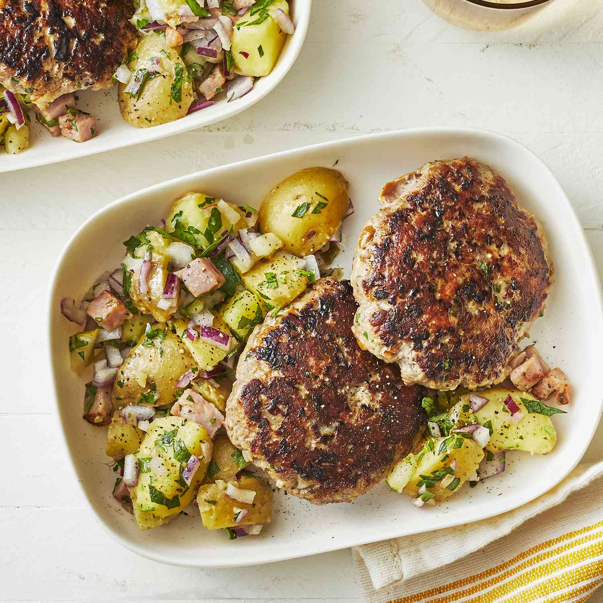

German Hamburgers (Frikadellen)

Frikadellen, the original hamburger, are served like a flattened meatball with string beans and salad.
I also like to use this recipe to make Swedish meatballs (but omit the paprika).
My aunt in Hamburg, Germany, taught me this recipe, and I've been making it ever since. Serve with steamed string beans and tossed salad.
Or serve on a kaiser roll with lettuce, tomato, pickled cucumbers, finely sliced deep-fried onions, and curry ketchup.
Prep Time: 20 mins
Cook Time:strong 10 mins
Additional Time: 10 mins
Total Time: 40 mins
Servings: 4
Yield: 8 small patties
Ingredients
- 1 kaiser roll
- ⅔ pound ground beef
- ⅓ pound ground pork
- 1 onion, finely chopped
- ¼ cup chopped fresh parsley
- 1 large egg
- 1 teaspoon Hungarian hot paprika (Optional)
- salt and ground black pepper to taste
Directions
step 1
Soak kaiser roll in a medium bowl of water for 10 minutes. Drain and squeeze out excess water; crumble into a large bowl.step 2
Add ground meats, onion, parsley, egg, paprika, salt, and black pepper to crumbled roll; mix until well blended. Shape mixture into large flattened meatballs.step 3
Heat a large nonstick skillet over medium heat.
Fry meatballs in the hot skillet until browned and no longer pink in the center,
about 5 minutes per side. An instant-read thermometer inserted into the center of a patty should read at least 160 degrees F (70 degrees C).
Home